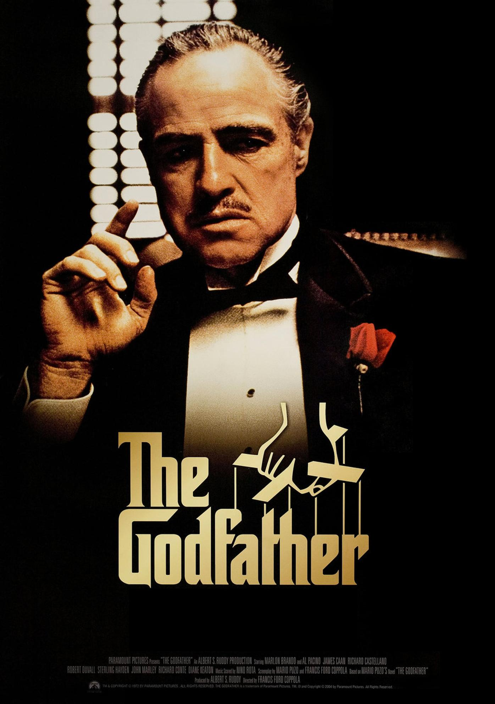
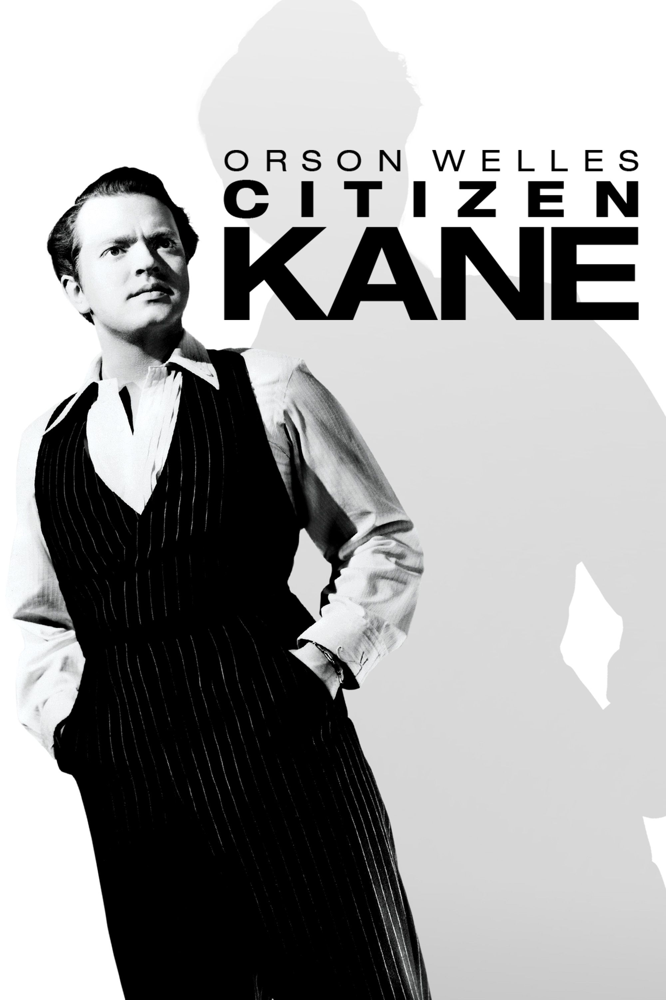

The Godfather (1972) - Crime/Drama
Francis Ford Coppola's epic crime drama explores the Corleone mafia family, blending themes of power, loyalty, and morality. Marlon Brando and Al Pacino deliver unforgettable performances in this cinematic landmark.
Citizen Kane (1941) - Drama/Mystery
Orson Welles' groundbreaking film chronicles the rise and fall of media tycoon Charles Foster Kane. Known for its innovative storytelling and cinematography, it’s often hailed as the greatest film ever made.
The Shawshank Redemption (1994) - Drama

Based on a Stephen King novella, this powerful tale of hope and friendship follows two prisoners (Tim Robbins and Morgan Freeman) as they navigate life behind bars. Its emotional depth and inspiring message have made it a timeless classic